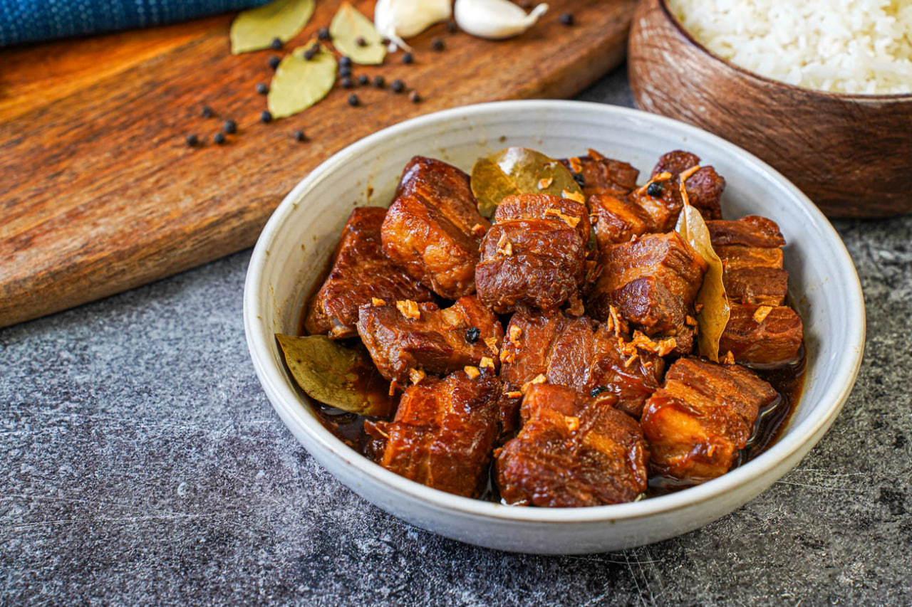

Pork Adobo
Considered the unofficial national dish of the Philippines, Adobo originated from the indigenous method of preserving meat using vinegar and salt long before refrigeration. The Spanish later added soy sauce, creating the iconic savory, sour, and garlicky profile we know today. Eaten nationwide, this beloved dish involves braising pork (or chicken) in vinegar, soy sauce, garlic, bay leaves, and black peppercorns until the meat is deeply flavored and tender.

Gather
Ingredients
- Pork belly or shoulder, cut into cubes
- Soy sauce
- Cane vinegar or white vinegar
- Garlic, crushed (lots of it)
- Dried bay leaves
- Whole black peppercorns
- Brown sugar (optional, to balance acidity)
- Water
- Cooking oil
Make it
Recipe
- In a bowl, marinate the pork pieces in soy sauce, crushed garlic, and whole black peppercorns for at least 30 minutes.
- Heat oil in a pan or pot. Remove the pork from the marinade (reserve the liquid) and sear the meat until lightly browned.
- Pour in the reserved marinade, water, and add the dried bay leaves. Bring to a boil.
- Lower the heat, cover, and simmer for about 40-50 minutes, or until the pork is tender.
- Pour in the vinegar. Do not stir for the first 3-5 minutes to allow the raw acid of the vinegar to cook off.
- Stir and let it simmer for another 10 minutes until the sauce reduces to your desired thickness (some like it saucy, some prefer it dry and oily).
- Serve hot with steamed white rice.